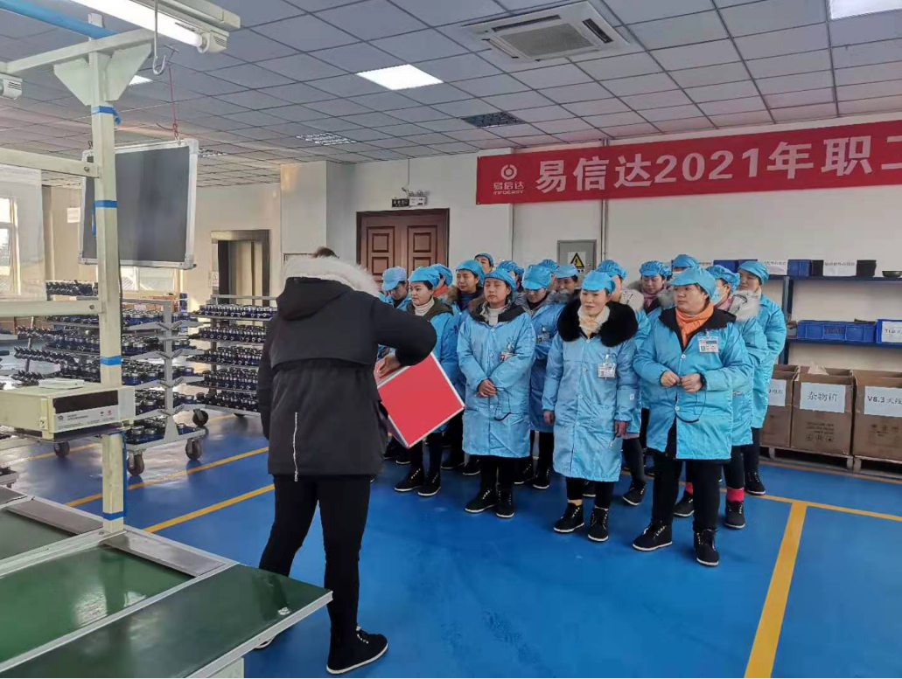
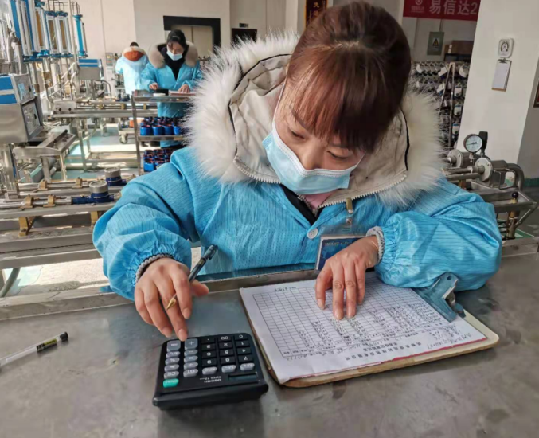
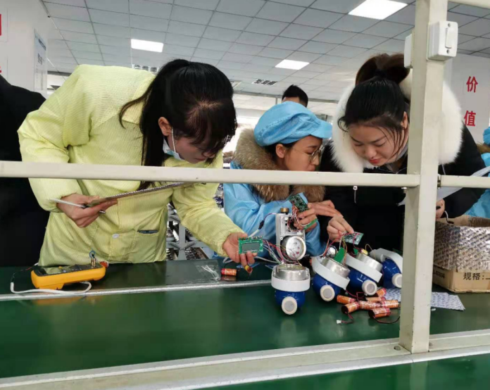
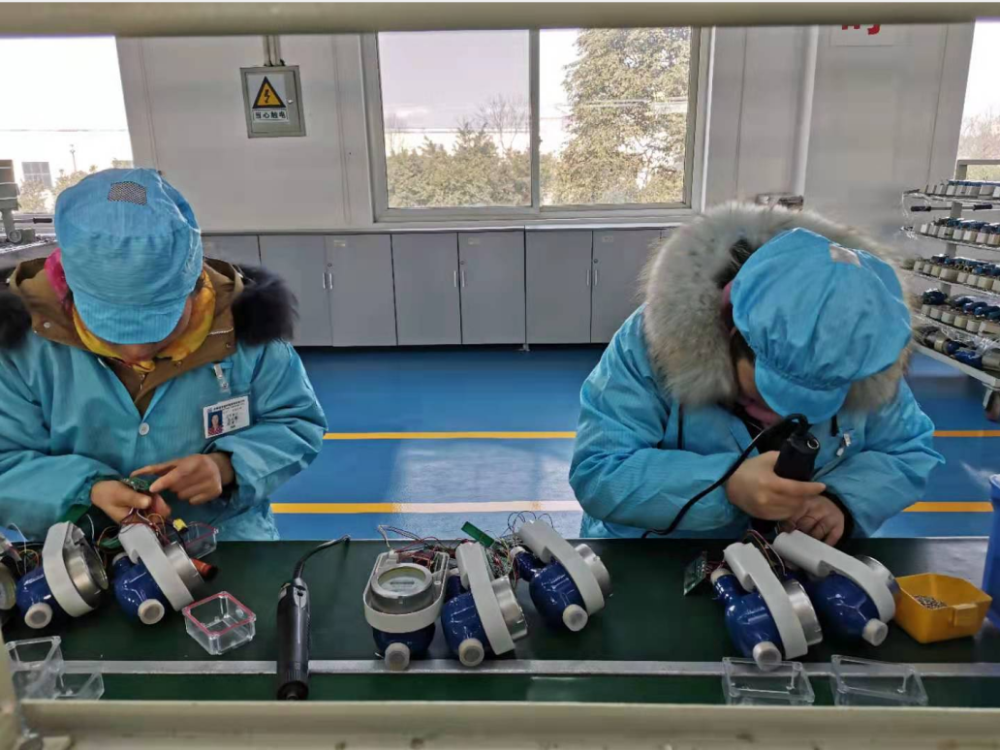
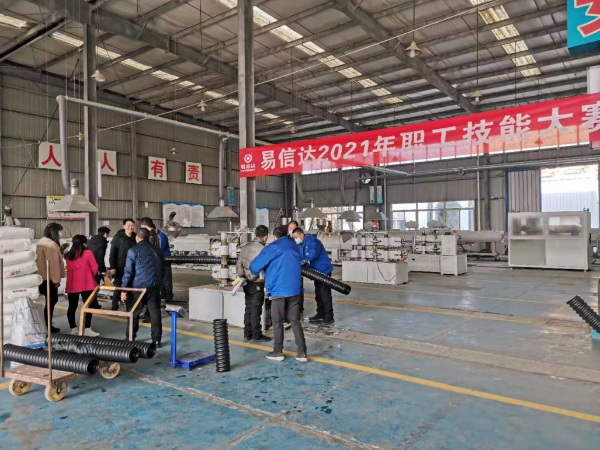
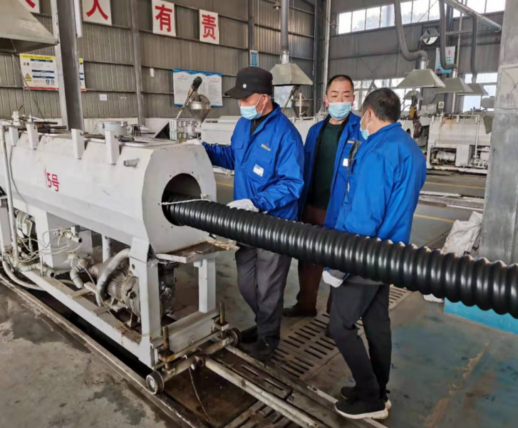
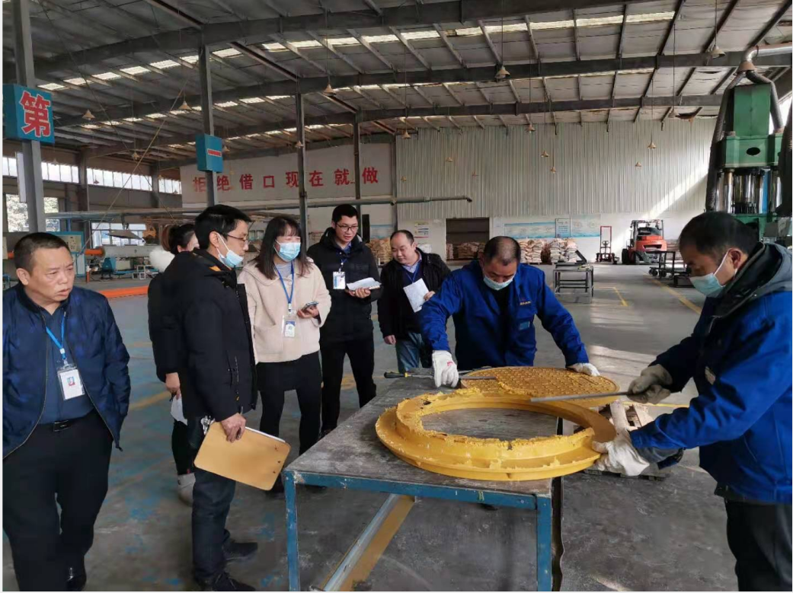
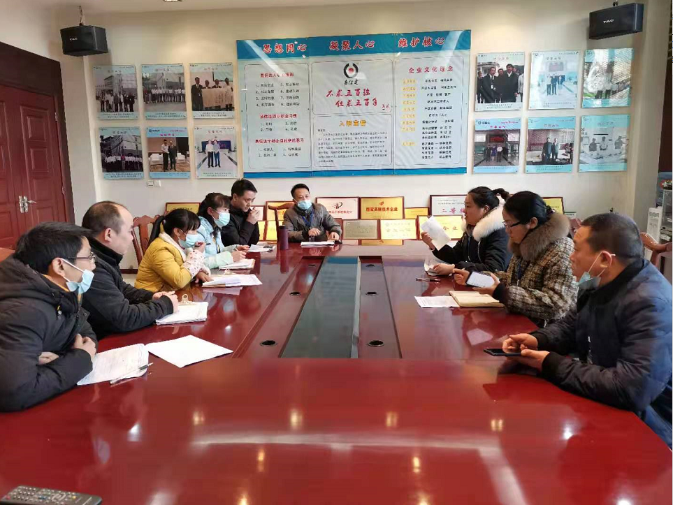
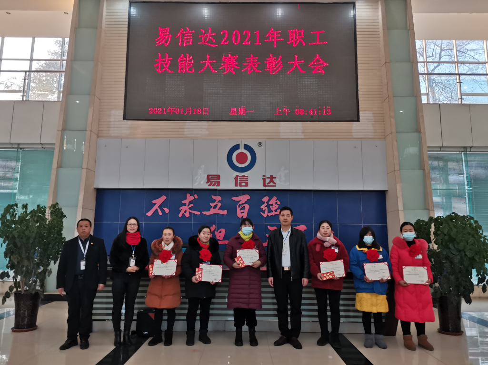
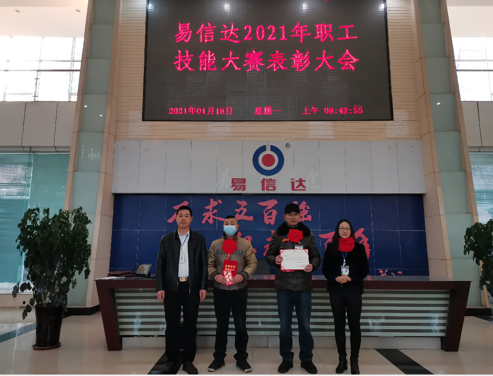

发布时间：2021/1/18 浏览次数：2035
2021年元月13日，易信达职工技能大赛在紧张激烈的氛围中拉开了序幕，此次大赛的宗旨是以提高员工积极性和岗位练兵为前提，全面检测各岗位技能技巧与实际操作能力，以提高岗位技能为目的，强化提升员工技能水平，为今后的职业发展打下坚实的基础。
本次大赛评委由公司管理人员、车间主管、技术质量、工艺检测人员等组成，7位评委全程跟进，深入比赛现场，认真观察、记录每一位参赛人员情况，进行现场实时计时、记录、考核、评分。大赛共分为两大项目：智能制造中心个人技能赛、新材料车间班组绩效赛。参赛选手共达60余人。
整个流程按公司生产工艺标准流程严格要求，每人相同规格型号、相同数量的原材料，从组装到测试再到焊接最后装配等，质量最佳、时间最快、失误最少、外观最好位列前茅者胜。 伴随着水表基表组装的前期准备工作，首件调效，基表组装等，大家拿出了平时工作中的最佳经验你追我赶，随着误差测试工序的到来，为了达到快、准、优的目的，参赛选手个个精神饱满、各显身手，发扬着他们认真、仔细、迅捷的优良作风，易信达塑管一管到底、易信达井盖盖世上、易信达仪表表里如一的企业文化展现的淋漓尽致！
在电烙铁取放所发出的碰撞声中，焊接实操开始了，选手们都对自己的技能胸有成竹，镇定自若地进入到各项工序的操作。技能大赛，对参赛选手的操作技能和心里素质要求极高，赛场实况更是紧张而有序，真实展现了参赛选手的日常工作水平。
智能制造中心个人技能赛，在连续2天的紧张比拼中落下了帷幕。 紧接着，开始了新材料车间的班组绩效赛，比赛形式是以班组为单位，在公司生产工艺的严格要求下，以时间、质量、成本进行评分。新材料班组成员发挥着团队合作精神，相互协作、共同努力，紧张有序的进行着，操作中无需过多语言，一个动作、一个眼神就是他们最好的沟通方式。
现场的评委们认认真真、公平公正地按赛制要求进行评分，每天比赛结束后，评委们召开讨论会，对选手们在操作中的不足之处予以讨论，并作出指导意见，为员工在以后的实操中，提供了宝贵的意见和建议，进一步提升了员工们的工作技能。
通过此次技能大赛，我们深刻认识到开展技能大赛的重要性，技能竞赛就像一个大的“检阅场”，不仅给全公司全展现了高水准的技能切磋平台，更是为提高工作效率、提升产品质量、降低生产成本提供了交流平台，同时，体现了员工个人和团队的荣誉感，联络了全厂员工的感情，增强了公司上下一心的凝聚力，相信在全体员工的共同努力下，易信达的明天会越来越好！越来越辉煌！